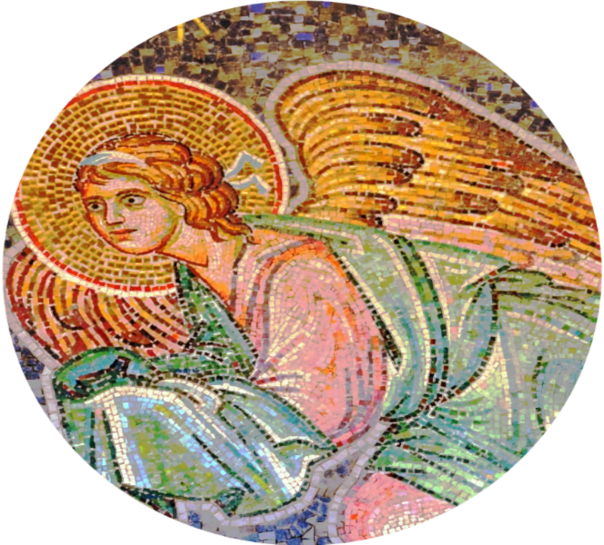

Diese Geschichte ist vermutlich weniger bekannt unter Menschen, die keine feste Bindung zu einer der abrahamitischen Relgionen (Christentum, Judaism oder Islam) haben. Trotzdem hat die Geschichte enorme Relevanz und Wichtigkeit für alle, die die Bibel besser verstehen wollen. In bisherigen Beiträgen wurde schon dokumentiert, wie moralisch mangelhaftes Benehmen von Gott verurteilt und bestrafft wird. Oft werden solche Taten von der Bibel explizit verurteilt, aber auch mal indirekt. Es gibt aber natürlich auch Ausnahmen, und mit so einer Ausnahme werden wir uns jetzt beschäftigen. Mit List und Betrug wird man in den Erzählungen über Jakob mehrmals konfrontiert. Manchmal geht dieses Verhalten von Jakob direkt aus, andere Male von Mitglieder seiner Familie.
Unsere Gechichte beginnt in 1. Mose (Genesis) Kapitel 25, Vers 23: Rebekka ist schwanger, und ihre 2 noch nicht geborenen Söhne ringen miteinander in ihrem Mutterleib. Gott offenbart ihr folgendes: „Zwei Völker sind in deinem Leibe, und zweierlei Leute werden sich scheiden aus deinem Leibe; und ein Volk wird dem anderen überlegen sein, und der Ältere wird dem Jüngeren dienen.” Übrigens kommt es in der Bibel oft vor, dass ein Volk dazu bestimmt wird, einem anderen zu dienen oder untergeordnet zu sein. Dieses Phänomen wurde schon in einem früheren Beitrag erwähnt, und wird sicherlich in künftigen Beiträgen wieder vorkommen. Für diese Erzählung, kommen wir den Sichtweise und beabsichtigter Botschaft des Autoren näher, indem wir einen näheren Blick auf Jakob Aufstieg werfen.
Der erste Hinweis finden wir in der Erzählung darüber, wie Esau sein Erstgeburtsrecht verkaufte. Eines Tages kommt Esau, müde und hungrig nach der Jagdt im Feld, zu Jakob und bittet Jakob darum, irgendein Gericht für ihn zu kochen. Für das Gefallen verlangt Jakob, dass Esau zuerst sein Erstgeburtsrecht an Jakob verkaufe. Überraschend ist wie unverhältnismäßig die Forderung von Jakob ist, dennoch geht Esau trotzdem darauf ein und erklärt: „Siehe, ich muss doch sterben; was soll mir denn die Erstgeburt?” Also forderte Jakob an, dass Esau es ihm schwöre, was Esau auch tat. Dafür bekam Esau Brot und ein Linsengericht. In diesem Beispiel ist die Botschaft des Autoren klar: Esau preist sein Erstgeburtsrecht nicht, er denkt nur an den Moment, aber nicht an die Zukunft. Was aber vielleicht unbeabsichtigt ist: Jakob wird als Person dargestellt, die die Naivität seines eigenen Bruders auf übelsterweise ausnützt.
Wir können auf jeden Fall erkennen in dieser Geschicht, dass positive Eigenschaften wie Klugheit und vorausschaundes Denken gepriesen werden, während Leichsinnigkeit und die Tendenz, sich nur mit den Bedürfnissen der Gegenwart zu beschäftigen, als höchst verwerflich bewertet werden. Vergessen sollen wir aber nicht, dass diese Geschichte nicht nur um Jakob und Esau geht, sondern auch um 2 Völker die ihre Nachfolger sein werden. Somit etabliert die Bibel ein Muster, denn in unserem Beitrag über Abraham beschäftigten wir uns auch mit der Geschichte von 2 Blutlinien deren Schicksale von dem Verhalten der Vorfahren entschieden wurden. Damals handelte es sich um Sem und Ham. In jener Erzählung war Sems Klugheit erläutert, indem er wusste, wie eine unbequeme Situation (Noahs Nacktheit) zu behandeln war, während Ham diesen Test eben nicht bestand. Die Klugheit Sems Blutlinie wurde später weiterhin durch taktisch kluge Entscheidungen Abrahams veranschaulicht.
Die Geschichte Jakobs hat aber ein anderes Element, das uns im Kapitel 27 geschildert wird. Esau und Jakobs Vater, Isaak, ist alt geworden und kann nicht mehr gut sehen. Da Isaak nicht weiß, wie lange er noch zu leben hat, bittet er Esau darum, ein Wildbret im Feld zu jagen und ein Lieblingsgericht für Isaak zu kochen. Isaaks Frau Rebekka bekommt das Gespräch mit und, während Esau sich auf dem Weg macht, trifft sie sich mit Jakob, ihrem Lieblingssohn. Rebekka schmiedet also einen Plan, womit Jakob seinen Vater täuschen kann: Jakob soll vom Herd 2 Böcklein nehmen, dann würde Rebekka Isaaks Lieblingsgericht damit kochen Jakob geben. Jakob wird sich als Esau ausgeben und das Gericht Isaak geben, damit bekommt er Isaaks Segen.
Jakob ist zunächst unsicher und fürchtet, sein Vater könne den Plan durchschauen, moralische Bedenken äußert er aber nicht. Der Plan funktioniert, dabei Jakob lügt Isaak dreist aber dreimal an. Die dreiseste Lüge überhaupt kam aber im Vers 20 als Isaak seinen Sohn fragt, wie er das Wildbret so schnell gefunden habe: „Isaak aber sprach zu seinem Sohn: Mein Sohn, wie hast du so bald gefunden? Er antwortete: Der HErr, dein Gott, bescherte mir's.” Sollten wir diese Geschichte für wortwörtlich halten, mussten wir spätestens jetzt erwarten, dass Gott selbst einschreiten würde, da Gott sicherlich eine solche Lüge nicht einfach hinnehmen würde. Dies passiert aber nicht. Weder das Verhalten Jakkobs noch das seiner Mutter wird negativ beurteilt.
Nach der Tat, empfehlt Rebekka ihrem Sohn die Flucht, denn sie fürchtet, Esau könnte sich rächen wollen. Ob man die Flucht Jakobs und deren Folgen als „Bestraffung” für Isaaks Verhalten betrachten könnte, ist offen für Debatte. Sicher wurde Jakob später auch mit der List seines Onkels konfrontiert, als er 7 Jahre arbeitete, um Rahel als Weib zu nehmen. Da bekam er zunächst die ältere Schwester Lea, die nicht so schön war wie Rahel, schließlich bekam er aber auch Rahel mit dem Versprechen, 7 weitere Jahre zu arbeiten. Jakob wurde abermals mit List handeln (1. Mose / Genesis, Kapitel 30, Verse 37 - 43), um seine Herde wachsen zu lassen und sein Reichtum zu vermehren. Im großen Ganzen profitierte Jakob immens während seines „Exils”, trotz allem, und kommt am Ende als sehr wohlhabender Mann mit mehreren Weibern und vielen Nachwuchs zurück.
In einer späteren Geschichte, (1. Mose / Genesis 34) sieht ein Mann namens Sichem, Angehörige des Kindern Hemors der den Ort ragiert, eine Tochter Jakobs, die Dina heißt. Er nimmt sie für sich unter Zwang, gewinnt sie aber danach lieb, und will mit der Familie Jakob verhandeln, um Dina als Weib zu nehmen. Sichems Vater, Hemor, geht zu Jakob, um zu verhandeln, dabei hören Jakobs 2 Söhne davon und werden zornig. Dennoch tun die Söhne so, als akzeptierten sie das Vorhaben Sichems. Die Bedingung: Alle Männer der Stadt Sichems müssen beschnitten werden, damit würde angeblich ein Pakt zwischen den Völkern Sichems und denen Jakobs gemacht, dass Mischehen zwischen ihnen erlauben würde. Dieser Pakt wurde von den Söhnen Jakobs aber nur als Vorwand gemacht, denn als alle Männer der Stadt noch Schmerzen hatten, nachde, sie beschnitten wurden, nutzen die Söhne Jakobs die Gelegenheit aus, alle Männer der Stadt zu töten. Die Art und Wiese, wie Rache genommen wurde, zusammen mit der Unverhälnismäßigkeit dieser Rache, macht den Akt zweifellos moralisch verwerflich. Der Akt selbst bleibt aber trotzdem unbewertet und unkommentiert, Jakob erwähnt lediglich, dass der Akt seiner Söhne Feindschaften im Lande erzeugen könnte.
Wir sehen in dieser Geschichte, dass List und Täuschung keine besondere Aufmerksamkeit vom Verfasser der Geschichte bekommen. Weder werden diese moralisch bewertet, noch äußert Gott etwas zu den Taten. Die Vorfälle selbst werden nur als Tatsache beschrieben, frei von jeglichen Vorurteilen. Trotzdem werden Jakob und seine Nachfolger von Gott gesegnet. Wir bedenden diesen Beitrag hier mit den Worten Gottes von Kapitel 35, Verse 9 bis 12: „Und Gott erschien Jakob abermals, nachdem er aus Mesopotamien gekommen war, und segnete ihn und sprach zu ihm: Du heißt Jakob aber du sollst nicht mehr Jakob heißen, sondern Israel sollst du heißen. Und also heißt man ihn Israel. Und Gott sprach zu ihm: Ich bin der allmächtige Gott; sei fruchtbar und mehre dich; Völker und Völkerhaufen sollen von dir kommen, und Könige sollen aus deinen Lenden kommen; und das Land, das ich Abraham und Isaak gegeben habe, will ich dir geben und will's deinem Samen nach dir geben.”